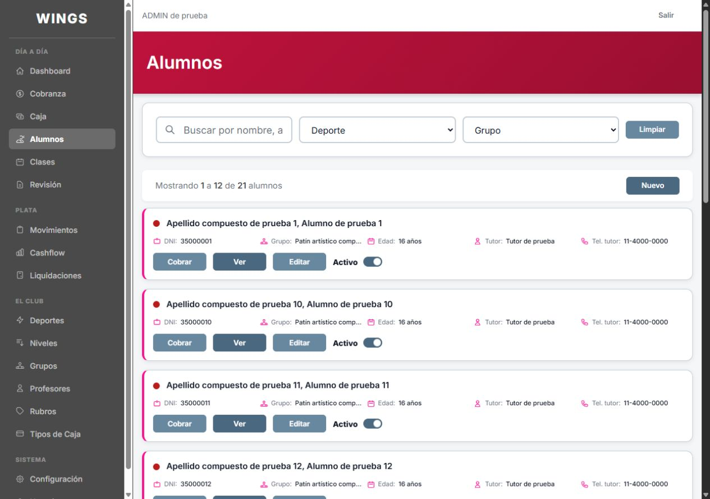
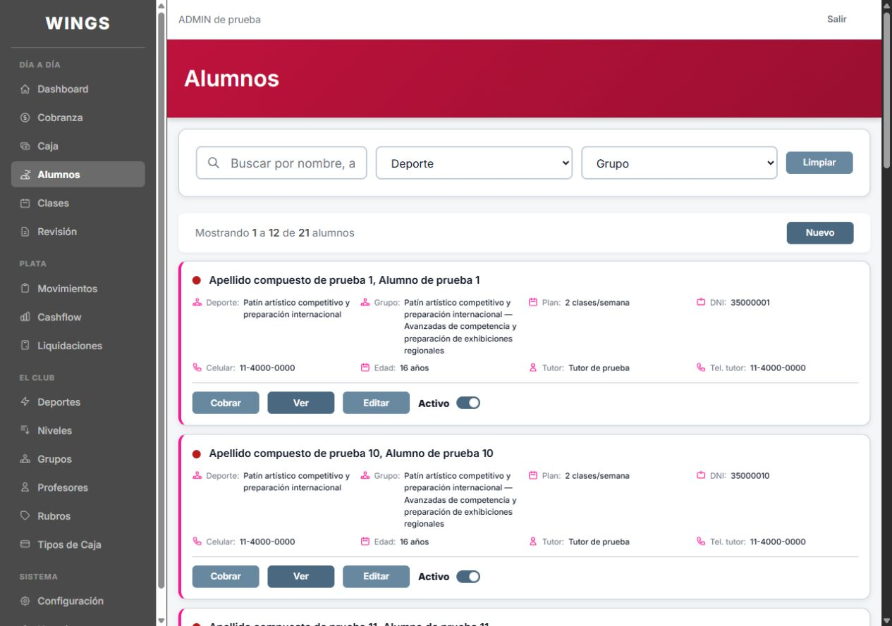
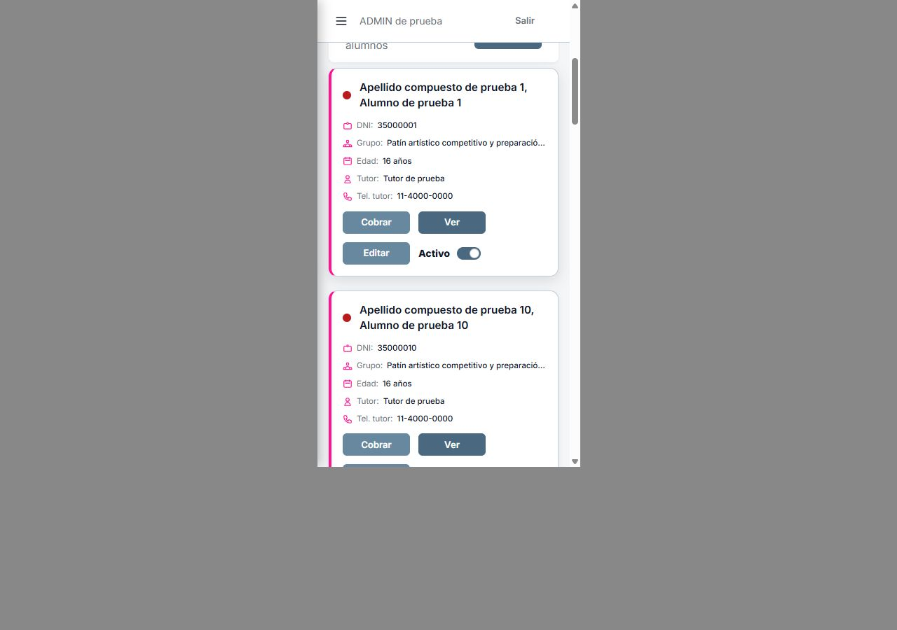
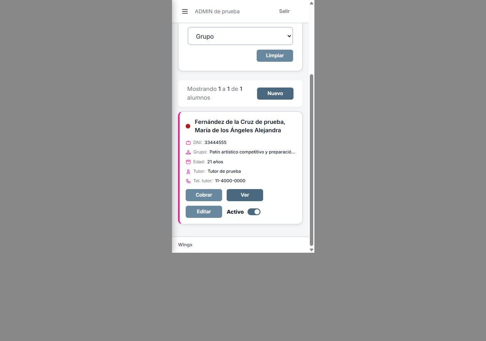
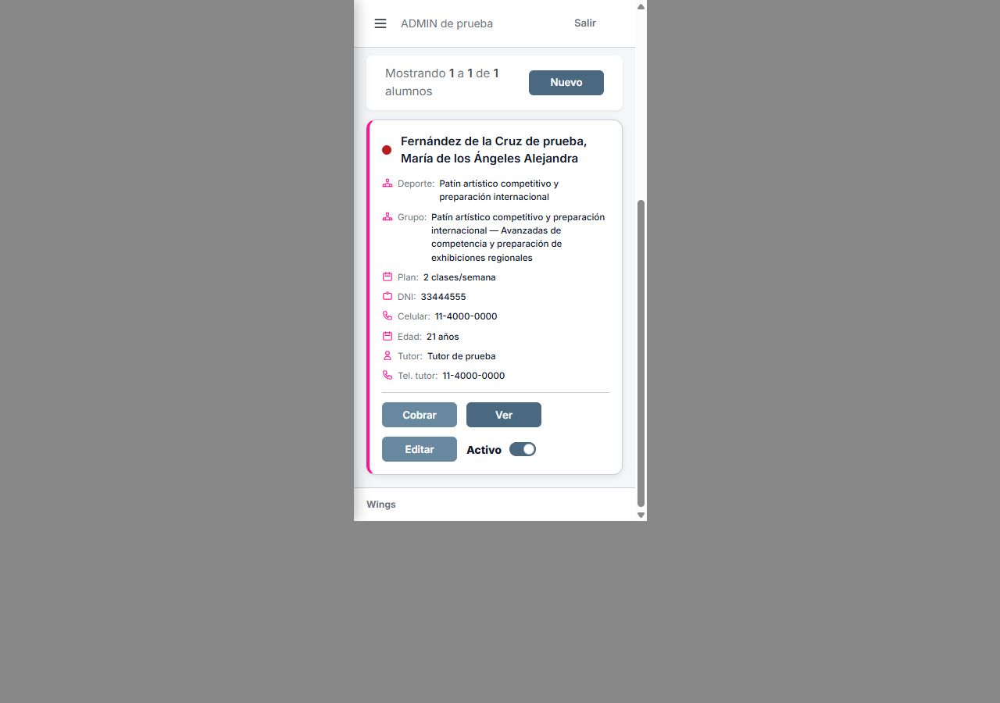

A7 · Opción B aprobada
Una tarjeta por fila, siempre. Carlos rechazó A y aprobó B el 07/10/2026. La decisión queda en las reglas de diseño. Se muestran plan y celular con los demás datos.
Capturas de celular rechazadas por Carlos el 07/10: no muestran los botones de la tarjeta. Pendiente reemplazarlas por capturas completas. Estas imágenes se conservan como antecedente.
B aplicada localmente; sin publicar. Estas son las capturas reales de la opción que Carlos aprobó. Capturas finales posteriores a la elección pendientes: Chrome devolvió «User unavailable» en dos consultas. Build y compilación Blade correctos. No se presentan estas imágenes anteriores como una nueva verificación final.
Escritorio · ADMIN

Abrir imagen original
Abrir imagen originalCelular · ADMIN · Marco de 375



Nombre, deporte y nivel largos · Datos ficticios





OPERATIVO


Login de control · PROFESOR: sin permiso.


Solo listado de Alumnos y CSS exclusivo de su contenedor. No cambia la tarjeta compartida de otras pantallas, botones ni interruptores.